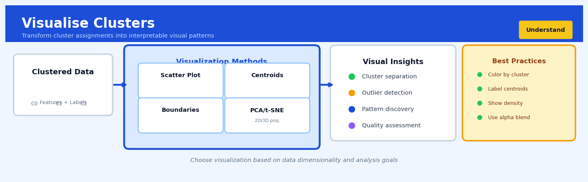

Visualise Clusters#


The biggest mistake I see is people visualizing high-dimensional clusters in 2D without understanding that PCA or t-SNE projections can completely distort the true cluster separations you carefully tuned your algorithm to find. Always complement dimensionality reduction plots with quantitative metrics like silhouette scores and within-cluster variance, because what looks beautifully separated in your t-SNE plot might actually be a jumbled mess in the original feature space. Color-coding by cluster label makes patterns pop instantly, but overlay your centroids and use semi-transparent points to reveal density hotspots that often expose data quality issues your algorithm silently absorbed.
The 60-Second Version#
What it does: Cluster visualisation converts complex groupings of customers, products, or transactions into maps and charts you can actually see and validate.
When to use it: You’ve run a clustering algorithm and now need to confirm the groups make sense, spot any customers placed in the wrong segment, or explain the segmentation to executives who need to approve strategy.
What you get back: A two-dimensional plot showing how separated your groups really are, plus diagnostic charts that highlight which items might be misclassified and deserve a second look.
Difficulty |
Moderate |
Typical runtime |
Seconds to minutes on 100K rows |
What you bring |
Cluster assignments and the original features used to create them |
What you get |
2D/3D scatter plots, silhouette diagrams, and cluster profile summaries |
Heuristix bucket |
Understand — Statistical Analysis & Profiling |
The visualisation cannot fix bad clustering—if your groups overlap completely on every chart, your segmentation likely failed at the algorithm stage, not the visualisation stage.
Learning Objectives#
After reading this chapter, a business user will be able to:
Identify situations where visual inspection of customer segments, product groups, or operational clusters would reveal actionable patterns that summary statistics alone would miss.
Interpret cluster visualisations to explain to executives whether discovered segments represent meaningful market divisions or merely statistical artifacts.
Decide whether to approve cluster-based strategies (targeted campaigns, inventory allocation, risk tiering) by assessing visual evidence of separation quality and within-group coherence.
After reading this chapter, a data scientist will be able to:
Implement appropriate dimensionality reduction techniques (t-SNE, UMAP, PCA) for different data types and cluster sizes, handling sparse features and computational constraints.
Tune perplexity, nearest-neighbor parameters, and projection dimensions by evaluating the trade-off between local structure preservation and global pattern visibility.
Diagnose visualization failures including crowding artifacts, false separation due to projection distortion, and misalignment between visual and algorithmic cluster boundaries using silhouette analysis and stress metrics.
Overview#
Cluster visualisation encompasses the suite of dimensionality reduction and graphical techniques used to project high-dimensional clustered data into two or three dimensions for human inspection and interpretation. Its core purpose is to provide visual confirmation that cluster assignments reflect genuine structure in the data, to identify potential misassignments, and to communicate clustering results to stakeholders who cannot interpret raw feature matrices. This family of methods bridges unsupervised learning outputs with human judgment, combining techniques from manifold learning (t-SNE, UMAP), linear projections (PCA), and statistical graphics (silhouette plots, cluster profiles).
When to Use This#
Use this when you have completed a clustering analysis and need to validate that the algorithm has discovered meaningful structure — visualisation provides a sanity check that clusters are not arbitrary partitions of a continuous distribution.
Use this when presenting clustering results to business stakeholders who need to understand customer segments, product groupings, or operational patterns — two-dimensional scatter plots are far more persuasive than tables of centroids.
Use this when you suspect your clustering algorithm has produced degenerate solutions — visualisation quickly reveals when one cluster contains nearly all observations or when clusters overlap completely.
Use this when comparing multiple clustering solutions (different \(k\) values, different algorithms) — side-by-side visualisations help identify which solution produces the most interpretable separation.
Use this when you need to identify borderline observations that may have been misassigned — points lying between cluster regions in the visualisation warrant further investigation.
Use this when exploring whether cluster structure persists across different subsets of your data — visualising clusters separately for different time periods or geographies reveals stability.
Use this when you need to communicate the heterogeneity within clusters, not just between them — density and spread in the visualisation convey information that summary statistics obscure.
Do NOT use this as the sole criterion for selecting the number of clusters — visual separability in 2D does not guarantee optimal clustering in the original high-dimensional space.
Do NOT use this when your data has fewer than three features — simply plot the original dimensions directly rather than applying dimensionality reduction.
Do NOT use this when you need to make automated decisions — visualisation supports human judgment but does not replace quantitative cluster validation metrics.
Questions This Answers#
Understanding Customer Segments#
Are these customer groups actually different from each other, or are we forcing distinctions that don’t exist?
We’ve split our customers into five segments — can you show me visually that these groups make sense?
Looking at this segmentation, do we have customers stuck between two groups who might be misclassified?
Which customer segments overlap the most, and should we consider merging them?
We’ve been using these buyer personas for two years — do they still reflect how our customers actually cluster today?
Validating Segmentation Strategy#
The algorithm says Customer #47382 belongs in our premium segment, but their behavior looks budget-conscious — what’s going on?
How tight or spread out are our segments? Do we have well-defined groups or fuzzy boundaries?
Can you show the executive team why these six segments are better than the four we used last year?
Our Atlanta and Chicago markets were placed in the same cluster — does that make sense when you look at all their characteristics together?
We’re seeing outliers in the clustering — are these data errors, or genuinely unique customers we should handle differently?
Communicating Insights and Next Steps#
How do I explain these clusters to the regional managers who need to act on them?
Which segments are most distinct and should get dedicated marketing campaigns versus shared approaches?
If we had to prioritize resources on just two customer segments, which ones are most clearly defined and separated from the rest?
Can you show me how Product Category A customers split across these segments compared to Category B customers?
How It Works#
Imagine you’re a museum curator who has organized 10,000 ancient artifacts into 8 categories—pottery, weapons, jewelry, tools, and so on—based on 47 different measurements: weight, age, chemical composition, decorative patterns, wear marks, and more. You know the groupings are mathematically sound, but when the museum director asks, “Show me why this bronze cup belongs with the weapons instead of the pottery,” you can’t just hand her a spreadsheet with 47 columns. Instead, you create a physical gallery map where each artifact is a dot on a floor plan, positioned so that similar items sit close together. Suddenly, the director sees that the “cup” clusters tightly with daggers and spearheads—it’s actually a ceremonial vessel shaped like a chalice but made with weaponsmith techniques. The 47 dimensions collapsed into a 2D map that human eyes can parse in seconds.
HIGH-DIMENSIONAL SPACE 2D VISUALIZATION
(impossible to see) (human-readable)
Customer data:
47 features per person ┌─────────────────────────┐
│ • • │
┌─────┬─────┬─────┬───┬─────┐ │ • • • Cluster A │
│Age │Spend│Visits│...│Feat │ │ • • (Young, │
├─────┼─────┼─────┼───┼─────┤ │ frequent) │
│ 24 │ 340 │ 12 │...│ ... │ │ │
│ 56 │ 85 │ 2 │...│ ... │ │ ■ ■ │
│ 23 │ 380 │ 15 │...│ ... │ │ ■ ■ ■ Cluster B │
│ 55 │ 90 │ 3 │...│ ... │ │ ■ ■ (Older, │
└─────┴─────┴─────┴───┴─────┘ │ infrequent)│
↓ │ │
DIMENSIONALITY │ ◆ ◆ │
REDUCTION │ ◆ ◆ ◆ Cluster C │
↓ │ ◆ (Mid-range) │
└─────────────────────────┘
Each point colored by its
assigned cluster label
Step 1: Start with the problem of too many dimensions. Your clustering algorithm has assigned each data point to a group based on dozens or hundreds of features, but humans can only visualize two or three dimensions at once. You need to compress this high-dimensional space down to something you can plot on a screen.
Step 2: Apply a dimensionality reduction technique. Methods like PCA find the two directions in your data that capture the most variation, like finding the angle where a 3D sculpture casts the most informative shadow. Techniques like t-SNE and UMAP go further, actively rearranging points so that neighbors in high-dimensional space stay neighbors in the 2D plot, even if it means distorting distances.
Step 3: Plot each point in this compressed space. Every customer, transaction, or document becomes a dot on a scatter plot, positioned based on its compressed coordinates. The 47 original features are gone—replaced by two synthetic dimensions that preserve the relationships between points.
Step 4: Color each point by its cluster label. Dots assigned to Cluster A get blue, Cluster B get red, and so on. Now the pattern becomes visible: do the colors form tight, separated islands, or do they mix chaotically?
Step 5: Inspect the visual for validation. Tight, well-separated color groups suggest your clusters are real. Scattered colors or overlapping groups suggest the clustering might be forcing structure where none exists. Points sitting far from their cluster-mates are potential misassignments worth investigating.
The key insight: Cluster visualization doesn’t change your clustering—it translates mathematical groupings into spatial patterns that leverage human visual perception, letting you validate whether the algorithm found genuine structure or merely imposed arbitrary boundaries.
The Intuition#
Imagine you are an astronomer who has catalogued thousands of stars, recording dozens of measurements for each: luminosity, temperature, mass, chemical composition, distance, velocity, and more. You have run a clustering algorithm that groups these stars into distinct categories, but the algorithm operates in a space with so many dimensions that you cannot directly perceive whether the groupings make sense. What you need is a way to project this complex, high-dimensional reality onto a flat surface—a star chart—where your eyes can immediately perceive whether the categories correspond to genuine celestial families or whether the algorithm has drawn arbitrary boundaries through a continuous stellar population.
This is precisely what cluster visualisation accomplishes. The core challenge is that human visual perception is limited to three spatial dimensions, yet real-world data routinely spans tens, hundreds, or even thousands of features. Dimensionality reduction techniques construct a lower-dimensional representation that preserves, as faithfully as possible, the geometric relationships that matter for understanding cluster structure. The key insight is that we do not need to preserve all information—we specifically want to preserve the relative distances and neighbourhood relationships that make clusters visually distinguishable. A good visualisation will show tight, well-separated groups when the clustering has captured genuine structure, and overlapping, diffuse clouds when the clustering is questionable.
Different projection methods make different trade-offs. Principal Component Analysis finds the linear subspace that captures maximum variance, which works well when clusters are separated along directions of high variability but can fail when cluster structure lies in nonlinear manifolds. t-SNE and UMAP explicitly optimise for preserving local neighbourhood structure, pulling similar points together and pushing dissimilar points apart, which often produces more visually striking cluster separation but can also exaggerate or create apparent structure that does not exist in the original space. Understanding these trade-offs is essential: the visualisation is a lens through which we view the data, and different lenses reveal different truths while potentially introducing different distortions.
The Mathematics#
Problem Setup and Notation#
Let \(\mathbf{X} \in \mathbb{R}^{n \times p}\) denote a data matrix with \(n\) observations and \(p\) features. A clustering algorithm has produced cluster assignments \(\mathbf{c} = (c_1, c_2, \ldots, c_n)^T\) where \(c_i \in \{1, 2, \ldots, K\}\) indicates the cluster membership of observation \(i\). Our goal is to find a low-dimensional embedding \(\mathbf{Y} \in \mathbb{R}^{n \times d}\) where \(d \in \{2, 3\}\) such that the cluster structure evident in the original space is preserved and visually interpretable.
Principal Component Analysis for Cluster Visualisation#
PCA finds the orthogonal linear transformation that maximises variance in the projected space. Given centred data \(\tilde{\mathbf{X}} = \mathbf{X} - \mathbf{1}\bar{\mathbf{x}}^T\), we seek the matrix \(\mathbf{W} \in \mathbb{R}^{p \times d}\) with orthonormal columns that maximises:
The solution is given by the \(d\) leading eigenvectors of the covariance matrix \(\mathbf{S} = \frac{1}{n-1}\tilde{\mathbf{X}}^T\tilde{\mathbf{X}}\). The embedding is:
The proportion of variance explained by the first \(d\) components is:
where \(\lambda_1 \geq \lambda_2 \geq \cdots \geq \lambda_p\) are the eigenvalues of \(\mathbf{S}\).
Assumptions: PCA assumes that directions of maximum variance are informative for cluster structure. This holds when clusters are separated along axes of high variability but fails when clusters differ primarily in low-variance directions.
t-Distributed Stochastic Neighbour Embedding#
t-SNE constructs probability distributions over pairs of points and minimises the divergence between high-dimensional and low-dimensional distributions.
In the original space, define the conditional probability that point \(i\) would pick point \(j\) as a neighbour:
The bandwidth \(\sigma_i\) is set such that the perplexity equals a user-specified value:
The joint distribution is symmetrised: \(p_{ij} = \frac{p_{j|i} + p_{i|j}}{2n}\).
In the embedding space, similarities are modelled using a Student’s t-distribution with one degree of freedom:
The objective function is the Kullback-Leibler divergence:
The gradient with respect to embedding coordinates is:
Optimisation proceeds via gradient descent with momentum and early exaggeration.
Assumptions: t-SNE assumes local structure is more important than global structure. It is non-parametric and cannot embed new points without re-running the algorithm.
Uniform Manifold Approximation and Projection#
UMAP constructs a weighted graph representation of the data and optimises a low-dimensional layout that preserves the graph structure.
For each point \(i\), define the distance to its \(k\)-th nearest neighbour as \(\rho_i\) and compute local connectivity:
where \(\sigma_i\) is calibrated to achieve a target number of neighbours. The symmetrised weight is:
In the embedding space, edge weights are modelled as:
The objective combines cross-entropy terms for attraction and repulsion:
Assumptions: UMAP assumes data lies on or near a manifold and that the manifold is locally connected. Parameters \(a\) and \(b\) are typically set automatically based on the minimum distance parameter.
Silhouette Visualisation#
The silhouette coefficient for observation \(i\) in cluster \(c_i\) is:
where \(a_i\) is the mean distance to other points in the same cluster and \(b_i\) is the mean distance to points in the nearest other cluster:
Silhouette values range from \(-1\) (likely misassigned) to \(+1\) (well-clustered). The silhouette plot displays \(s_i\) sorted within each cluster.
Edge Cases and Degenerate Conditions#
Single-point clusters: Silhouette is undefined; visualisations show isolated points.
Collinear data: PCA captures all variance in one component; nonlinear methods may produce arbitrary arrangements.
Disconnected clusters: t-SNE and UMAP may arbitrarily position distant clusters; global distances are not preserved.
Very high dimensionality: Distance concentration makes all pairwise distances similar, degrading all methods.
Understanding the Mathematics#
Euclidean Distance in High Dimensions#
The equation:
Read it aloud:
The distance between point i and point j equals the square root of the sum of squared differences across all p dimensions.
What each symbol means:
\(d(\mathbf{x}_i, \mathbf{x}_j)\) = distance between two data points
\(\mathbf{x}_i\) = the i-th data point (a vector of features)
\(\mathbf{x}_j\) = the j-th data point (another vector)
\(p\) = total number of dimensions (features)
\(x_{ik}\) = the value of point i in dimension k
\(x_{jk}\) = the value of point j in dimension k
\(\sum\) = sum everything up
\(\sqrt{}\) = take the square root
A concrete numerical example:
Customer A has age=35, income=\(75,000, spending=\)12,000. Customer B has age=42, income=\(68,000, spending=\)15,000. We have p=3 dimensions. The distance is:
Why this equation matters:
Every dimensionality reduction technique must first measure how close or far apart points are in the original high-dimensional space—this is the foundation we’re trying to preserve when we project down to 2D.
t-SNE Probability in High Dimensions#
The equation:
Read it aloud:
The probability that point i would pick point j as its neighbor equals the exponential of their negative squared distance divided by twice sigma-squared, all divided by the sum of those same exponentials for every other possible neighbor.
What each symbol means:
\(p_{j|i}\) = probability that i picks j as a neighbor
\(\exp()\) = exponential function (e to the power of…)
\(\|\mathbf{x}_i - \mathbf{x}_j\|^2\) = squared distance between points
\(\sigma_i^2\) = variance parameter controlling neighborhood size
numerator = how similar i and j are
denominator = normalization (makes all probabilities sum to 1)
A concrete numerical example:
Point i is distance 2.0 from point j, distance 5.0 from point k, and distance 8.0 from point m. With \(\sigma_i^2 = 1\):
Point j is almost certainly i’s neighbor because it’s much closer.
Why this equation matters:
t-SNE preserves local neighborhoods—if customers are similar in 50-dimensional feature space, this equation ensures they’ll still be close in your 2D visualization, making cluster boundaries visible.
PCA Variance Explained#
The equation:
Read it aloud:
The variance explained by component k equals that component’s eigenvalue divided by the sum of all eigenvalues.
What each symbol means:
\(\lambda_k\) = eigenvalue of the k-th principal component
numerator = variance captured by this one component
\(\sum_{j=1}^{p} \lambda_j\) = total variance in all dimensions
result = proportion of information retained
A concrete numerical example:
Your customer dataset has eigenvalues: \(\lambda_1 = 450\), \(\lambda_2 = 230\), \(\lambda_3 = 80\), others sum to 40. Total = 800.
The first principal component captures 56% of all variation in your data.
Why this equation matters:
This tells you whether your 2D visualization is trustworthy—if the first two components explain 80% of variance, you’re seeing most of the structure; if only 30%, you’re missing critical information.
The Big Picture#
The mathematics of cluster visualization solves a fundamental problem: human eyes see in two dimensions, but real data lives in dozens or hundreds. These equations provide principled ways to flatten high-dimensional space while preserving the relationships that matter. t-SNE and UMAP preserve neighborhoods—points close together stay close. PCA preserves global variance—the directions of maximum variation become your axes. Each approach makes different tradeoffs, but all share the goal of keeping similar points near each other in the reduced space. The core mathematical insight is this: measure what “closeness” means in the original space, then optimize a lower-dimensional arrangement that respects those measurements as faithfully as possible.
Python Implementation#
import numpy as np
import pandas as pd
import matplotlib.pyplot as plt
from sklearn.datasets import make_blobs
from sklearn.cluster import KMeans
from sklearn.decomposition import PCA
from sklearn.manifold import TSNE
from sklearn.metrics import silhouette_samples, silhouette_score
import umap
# Generate synthetic clustered data in high dimensions
np.random.seed(42)
n_samples = 500
n_features = 20
n_clusters = 4
# Create blob data with known cluster structure
X, y_true = make_blobs(
n_samples=n_samples,
n_features=n_features,
centers=n_clusters,
cluster_std=1.5,
random_state=42
)
# Perform K-Means clustering
kmeans = KMeans(n_clusters=n_clusters, random_state=42, n_init=10)
cluster_labels = kmeans.fit_predict(X)
print(f"Data shape: {X.shape}")
print(f"Number of clusters: {n_clusters}")
print(f"Cluster sizes: {np.bincount(cluster_labels)}")
# === PCA Visualisation ===
pca = PCA(n_components=2)
X_pca = pca.fit_transform(X)
# Report variance explained
print(f"\nPCA variance explained: {pca.explained_variance_ratio_}")
print(f"Total variance explained: {pca.explained_variance_ratio_.sum():.3f}")
# === t-SNE Visualisation ===
# Perplexity should be less than n_samples; typical values 5-50
tsne = TSNE(
n_components=2,
perplexity=30,
learning_rate='auto',
init='pca',
random_state=42
)
X_tsne = tsne.fit_transform(X)
print(f"\nt-SNE final KL divergence: {tsne.kl_divergence_:.4f}")
# === UMAP Visualisation ===
umap_reducer = umap.UMAP(
n_components=2,
n_neighbors=15, # Controls local vs global structure
min_dist=0.1, # Controls tightness of clusters
metric='euclidean',
random_state=42
)
X_umap = umap_reducer.fit_transform(X)
# === Create comparison visualisation ===
fig, axes = plt.subplots(1, 3, figsize=(15, 5))
# Define colour map for clusters
colors = plt.cm.Set1(np.linspace(0, 1, n_clusters))
# PCA plot
for k in range(n_clusters):
mask = cluster_labels == k
axes[0].scatter(X_pca[mask, 0], X_pca[mask, 1],
c=[colors[k]], label=f'Cluster {k}', alpha=0.6, s=30)
axes[0].set_xlabel(f'PC1 ({pca.explained_variance_ratio_[0]:.1%} var)')
axes[0].set_ylabel(f'PC2 ({pca.explained_variance_ratio_[1]:.1%} var)')
axes[0].set_title('PCA Projection')
axes[0].legend()
# t-SNE plot
for k in range(n_clusters):
mask = cluster_labels == k
axes[1].scatter(X_tsne[mask, 0], X_tsne[mask, 1],
c=[colors[k]], label=f'Cluster {k}', alpha=0.6, s=30)
axes[1].set_xlabel('t-SNE 1')
axes[1].set_ylabel('t-SNE 2')
axes[1].set_title('t-SNE Projection')
axes[1].legend()
# UMAP plot
for k in range(n_clusters):
mask = cluster_labels == k
axes[2].scatter(X_umap[mask, 0], X_umap[mask, 1],
c=[colors[k]], label=f'Cluster {k}', alpha=0.6, s=30)
axes[2].set_xlabel('UMAP 1')
axes[2].set_ylabel('UMAP 2')
axes[2].set_title('UMAP Projection
## Visualisations


## Using This in Heuristix
### What Data You'll Need
The Visualise Clusters node expects data that has already been clustered—think of it as the "reveal" step after you've done your clustering work. You'll need:
- **Cluster labels** (categorical/integer): The group assignments from your clustering algorithm
- **Feature columns** (numeric): The original features used for clustering, or a subset of key features
- **Optional identifiers** (text/categorical): Customer IDs, product names, or other labels to help you interpret individual points
**Example input:**
| customer_id | age | spend | frequency | cluster |
|-------------|-----|-------|-----------|---------|
| C001 | 34 | 450 | 12 | 0 |
| C002 | 52 | 180 | 3 | 2 |
| C003 | 29 | 520 | 18 | 0 |
The node will use the numeric features to create visualizations and color-code them by your cluster labels.
### Configuration Parameters
| Parameter | What It Controls | Default | When to Change It |
|-----------|------------------|---------|-------------------|
| **Cluster Column** | Which column contains your cluster assignments | (auto-detect) | If you have multiple clustering results, select the one you want to visualize |
| **Feature Columns** | Which features to include in dimensionality reduction | All numeric | Use fewer (3-5 key features) if you have many correlated variables; helps with speed and clarity |
| **Method** | Dimensionality reduction technique: PCA, t-SNE, or UMAP | UMAP | Use PCA for speed and interpretability; t-SNE for well-separated clusters; UMAP for balanced view of local and global structure |
| **Perplexity** (t-SNE only) | How many neighbors each point considers | 30 | Increase (50-100) for larger datasets; decrease (5-15) for smaller datasets (<100 points) |
| **Min Distance** (UMAP only) | How tightly points cluster together | 0.1 | Decrease (0.01) to see fine structure; increase (0.5) for broader overview |
| **Show Silhouette** | Include silhouette plot alongside projection | Yes | Keep enabled—it's your quality check for cluster separation |
| **Point Labels** | Column to use for labeling points on hover | None | Add customer IDs or names to investigate specific cases interactively |
### What You'll Get Back
The node produces three main outputs:
**2D Scatter Plot**: Your high-dimensional data projected into two dimensions, with each point colored by cluster. Hover over points to see details. This is your primary visual check—do clusters form distinct clouds, or is everything jumbled together?
**Silhouette Plot**: Horizontal bars showing how well each point fits its assigned cluster (1.0 = perfect, 0 = on the boundary, negative = probably wrong cluster). Clusters with many negative values need investigation.
**Cluster Statistics Table**: Summary metrics including cluster sizes, average silhouette scores per cluster, and feature means. This helps you profile what makes each cluster distinct.
The node doesn't modify your data—it adds visualizations to your workflow canvas that you can export or screenshot for reports.
### Downstream Connections
After visualizing, you typically connect to:
- **Filter** node: To investigate problematic clusters or outliers you spotted visually
- **Export** node: To save the visualization or the cluster statistics for presentations
- **Profile Clusters** node: For deeper statistical analysis of what differentiates each cluster
### Quick Start: Visualizing Customer Segments
1. **Connect your clustered data** to the Visualise Clusters node
2. **Select your cluster column** (e.g., "segment")
3. **Choose 3-5 key features** that were important in your clustering (age, spend, frequency)
4. **Set method to UMAP** and run the node
5. **Check the silhouette plot** first—clusters with average scores below 0.25 may not be meaningful
6. **Examine the scatter plot**—do you see distinct groups or overlap?
7. **Review cluster statistics** to understand what makes each segment unique
### Practical Tips from the Field
**Tip 1**: If your scatter plot looks like a blob with no separation, your clusters might not reflect real structure. Try fewer clusters or different features before concluding clustering failed.
**Tip 2**: UMAP parameters are sensitive. If clusters look artificially separated or too compressed, adjust Min Distance before re-running your clustering—this is just visualization.
**Tip 3**: Use the silhouette plot to find borderline points. Filter for silhouette scores between -0.1 and 0.1 to identify customers who don't fit neatly into any segment.
**Tip 4**: When presenting to stakeholders, start with the scatter plot to show separation, then dive into cluster statistics to explain "Cluster 2 is high-value frequent buyers."
**Tip 5**: Save multiple visualizations with different methods (PCA + UMAP). PCA axes are interpretable ("PC1 = overall spending power"), while UMAP better preserves cluster boundaries.
## Config Recipes
### Recipe 1: Quick Exploration
**When to use:** Initial data exploration when you need immediate visual feedback on whether your clustering captured any structure at all, working with datasets under 10,000 samples.
**Settings:**
| Parameter | Value | Why |
|-----------|-------|-----|
| Method | PCA | Deterministic, runs in seconds |
| n_components | 2 | Fastest rendering, sufficient for sanity check |
| Perplexity/n_neighbors | Skip | Not applicable for PCA |
| Plot type | Scatter with cluster colors | Immediate visual separation assessment |
| Point size | 1-2 pixels | Fast rendering for dense plots |
**What you get:** A deterministic 2D projection computed in under 5 seconds that shows whether clusters occupy distinct regions of variance space.
**Trade-off:** You sacrifice non-linear structure preservation—clusters that separate in curved manifolds may appear overlapped.
### Recipe 2: Publication-Ready Validation
**When to use:** Preparing figures for papers, reports, or stakeholder presentations where cluster quality must be defensible and reproducible.
**Settings:**
| Parameter | Value | Why |
|-----------|-------|-----|
| Method | UMAP | Superior structure preservation with reproducibility |
| n_neighbors | 30 | Balances local and global structure |
| min_dist | 0.1 | Prevents over-compression while allowing separation |
| random_state | 42 (fixed) | Ensures reproducibility across runs |
| n_components | 2 or 3 | 2D for print, 3D for interactive supplements |
| Supplementary | Silhouette plot | Quantitative validation alongside visualization |
**What you get:** A stable, aesthetically clean projection that preserves both cluster separation and internal topology, with quantitative backing.
**Trade-off:** Computation takes 30 seconds to several minutes; requires hyperparameter justification in methods sections.
### Recipe 3: High-Dimensional Biological Data
**When to use:** Clustering gene expression, protein abundances, or other biological assays where features number in thousands and non-linear relationships dominate.
**Settings:**
| Parameter | Value | Why |
|-----------|-------|-----|
| Pre-processing | PCA to 50 components first | Denoise while retaining signal |
| Method | t-SNE on PCA output | Handles non-linearity after noise reduction |
| Perplexity | 50 | Higher value for typical biological sample sizes (100-1000) |
| early_exaggeration | 12 | Default works well post-PCA |
| learning_rate | 200 | Standard for post-PCA input |
| n_iter | 1000 | Ensures convergence with complex structure |
**What you get:** Clear visual separation of cell types/conditions without noise-driven fragmentation common in raw high-dimensional biological data.
**Trade-off:** Two-stage pipeline complicates interpretation—projection represents structure in PC space, not original features.
### Recipe 4: Anomaly Cluster Diagnosis
**When to use:** When your clustering algorithm has assigned suspicious samples to their own tiny clusters, and you need to verify whether they're true outliers or algorithm artifacts.
**Settings:**
| Parameter | Value | Why |
|-----------|-------|-----|
| Method | UMAP | Better preserves distance to outliers than t-SNE |
| n_neighbors | 5 | Low value emphasizes local neighborhoods |
| min_dist | 0.5 | Larger value prevents outliers from collapsing inward |
| Plot enhancement | Size points by cluster size | Makes singletons/small clusters visually prominent |
| Overlay | Distance to nearest cluster centroid as color | Quantifies separation |
**What you get:** Anomalous clusters appear spatially isolated with visual confirmation of their distance from main population clusters.
**Trade-off:** Low n_neighbors can fragment cohesive clusters, requiring careful interpretation of whether isolation is real or induced.
## Business Applications
**Financial Services**
A regional US credit union with 85,000 members struggled to explain why their fraud detection system flagged 18% of legitimate international transactions while missing sophisticated card-testing attacks. Their data science team applied UMAP projection to visualise transaction clusters in two dimensions, colour-coded by fraud labels, revealing that legitimate travel spending formed a tight island completely separate from the flagged transactions. By retraining their model to recognise this distinct cluster, they reduced false positives by 34% while maintaining fraud catch rates, saving an estimated $440,000 annually in customer service costs and prevented account closures.
**Retail**
An e-commerce fashion retailer with 1.2M SKUs segmented their product catalogue into twelve categories using k-means clustering but couldn't explain to merchandising teams why a leather jacket was grouped with winter boots rather than blazers. T-SNE visualisation revealed the clustering algorithm had prioritised seasonal demand patterns and price point over visual similarity—the jacket shared November sales spikes and £180–220 pricing with boots. Armed with this insight, merchandisers created hybrid "occasion-based" collections that increased cross-category bundle purchases by 23% and lifted average order value from £67 to £89.
**Healthcare**
A 400-bed hospital network in Ontario used hierarchical clustering to identify patient readmission risk profiles across 28 clinical and socioeconomic variables. Without visualisation, clinicians rejected the model as a "black box unsuitable for care decisions." Silhouette plots combined with PCA projections showed five distinct readmission clusters, including one small group (8% of patients) with exceptionally poor cluster cohesion—patients who didn't fit standard risk patterns. Manual chart review of this outlier cluster uncovered a previously unknown correlation between specific medication combinations and unplanned returns, leading to a pharmacy protocol change that reduced 30-day readmissions by 11%.
**Insurance**
A multinational property insurer discovered their claims triaging system routed 31% of moderate-severity water damage claims to senior adjusters unnecessarily. UMAP visualisation of historical claims revealed that "kitchen appliance failures" formed three distinct visual clusters: straightforward dishwasher leaks (68%), complex refrigerator line breaks requiring specialist assessment (21%), and washing machine floods with high fraud indicators (11%). By training junior adjusters to recognise the low-complexity cluster, they reduced senior adjuster workload by 890 hours per quarter and cut average claim resolution time from 4.2 days to 1.8 days.
**Manufacturing**
A European automotive supplier producing injection-molded components ran k-means clustering on sensor data from 47 production lines to predict maintenance needs. Cluster visualisation using PCA revealed that Line 23 occupied a unique position in feature space—its vibration and temperature signatures didn't match any of the five identified maintenance profiles. Physical inspection discovered improper installation of replacement bearings three months earlier, preventing a catastrophic failure estimated to cost €340,000 in downtime and emergency repairs.
**Logistics**
A last-mile delivery company serving metropolitan Boston clustered 8,200 regular delivery addresses into route zones but faced driver complaints about inefficient assignments. Geographic overlay of t-SNE clusters revealed the algorithm had created routes based on delivery time windows and package volume rather than pure proximity, producing geographically scattered but temporally logical zones. Driver re-training focused on time-based thinking increased on-time delivery rates from 87% to 94% and reduced daily vehicle miles by 12%.
**Marketing**
A B2B SaaS company with 14,000 freemium users applied customer segmentation but couldn't determine which clusters to prioritise for conversion campaigns. Silhouette analysis showed one segment had extremely low cohesion scores (0.18 vs. 0.61+ for others), indicating these users didn't truly share characteristics. Removing this "junk drawer" segment and splitting the remaining users into four tighter clusters enabled personalised email campaigns that lifted free-to-paid conversion from 2.3% to 4.1%, adding $780,000 in annual recurring revenue.
**Telecommunications**
A national mobile carrier visualised customer churn prediction clusters and discovered their "high-risk" segment contained two visually distinct sub-populations: price-sensitive customers near competitor retail stores and data-heavy users experiencing network congestion. This geographic-behavioural distinction, invisible in raw feature tables, enabled targeted retention strategies that reduced monthly churn from 2.8% to 1.9%.
**Public Sector**
A city planning department clustered 340 park facilities by usage patterns and maintenance needs. PCA visualisation revealed that playground equipment age, not visitor volume, determined the primary clustering structure—a surprise that shifted their capital budget allocation and extended 200+ playground lifecycles by prioritising proactive component replacement over reactive full rebuilds.
## Worked Example
Sarah Chen, a senior data scientist at Velocity Retail, was midway through her second coffee when the VP of Marketing, Derek, appeared at her desk with a printout. "We segmented our customer base into five groups last month," he said, tapping the paper. "The business units are already building campaigns around them. But yesterday, someone in finance asked me how I *know* these segments are real and not just statistical noise. I couldn't answer."
The question mattered because Velocity was about to commit $2.3 million to differentiated marketing strategies across these segments. If the clusters were artificial—artifacts of algorithm settings rather than genuine customer patterns—the entire investment could be misdirected.
Sarah pulled the customer feature set that afternoon: 12,000 customers described by purchase frequency, average order value, product category preferences, and engagement metrics. The clustering had already been performed using k-means with k=5, assignments stored in a column called `cluster_id`. Here's what a sample looked like:
| customer_id | purchase_freq | avg_order_value | email_opens | cluster_id |
|-------------|---------------|-----------------|-------------|------------|
| C10234 | 2.3 | 87.50 | 0.12 | 2 |
| C10891 | 8.1 | 142.30 | 0.58 | 4 |
| C11002 | 0.4 | 31.20 | 0.03 | 0 |
| C11156 | 12.7 | 203.80 | 0.71 | 4 |
The data had the usual messiness: `email_opens` was a rate between 0 and 1, while `avg_order_value` ranged into the hundreds. Sarah knew that visualising this 18-dimensional space (the original features plus derived metrics) would require careful dimensionality reduction.
She opened her cluster visualisation workflow. First decision: which projection method? PCA would be fastest and most interpretable—each axis would be a linear combination of features—but it assumed linear relationships. UMAP would capture non-linear manifold structure, which felt right for customer behaviour data where relationships are rarely straight lines. She chose UMAP with 50 neighbours (enough to capture global structure without oversmoothing) and a minimum distance of 0.1 to allow tight cluster formations.
For validation metrics, she enabled silhouette analysis. This would quantify how well each customer fit their assigned cluster compared to neighbouring clusters—exactly the "are these real?" question Derek had asked.
```python
# Sarah's cluster visualisation script
import pandas as pd
import umap
import matplotlib.pyplot as plt
from sklearn.metrics import silhouette_samples, silhouette_score
# Load clustered customer data
customers = pd.read_csv('customer_segments.csv')
features = customers.drop(['customer_id', 'cluster_id'], axis=1)
clusters = customers['cluster_id']
# UMAP projection to 2D
# Using 50 neighbors to preserve global structure
reducer = umap.UMAP(n_neighbors=50, min_dist=0.1, random_state=42)
embedding = reducer.fit_transform(features)
# Calculate silhouette scores
silhouette_avg = silhouette_score(features, clusters)
silhouette_values = silhouette_samples(features, clusters)
# Visualise
fig, (ax1, ax2) = plt.subplots(1, 2, figsize=(14, 6))
# UMAP scatter
scatter = ax1.scatter(embedding[:, 0], embedding[:, 1],
c=clusters, cmap='tab10', alpha=0.6, s=5)
ax1.set_title(f'UMAP Projection (Silhouette: {silhouette_avg:.3f})')
ax1.set_xlabel('UMAP 1')
ax1.set_ylabel('UMAP 2')
plt.colorbar(scatter, ax=ax1, label='Cluster')
# Silhouette plot
y_lower = 10
for i in range(5):
cluster_silhouette_values = silhouette_values[clusters == i]
cluster_silhouette_values.sort()
size_cluster_i = cluster_silhouette_values.shape[0]
y_upper = y_lower + size_cluster_i
ax2.fill_betweenx(range(y_lower, y_upper), 0, cluster_silhouette_values)
y_lower = y_upper + 10
ax2.axvline(silhouette_avg, color="red", linestyle="--")
ax2.set_title('Silhouette Plot by Cluster')
ax2.set_xlabel('Silhouette Coefficient')
plt.tight_layout()
plt.savefig('segment_validation.png', dpi=300)
The results arrived on her screen within seconds. The overall silhouette score was 0.41—solidly in the “moderate structure” range. More telling was the UMAP projection: clusters 0, 2, and 4 formed distinct islands in the visualisation space, clearly separated. Clusters 1 and 3 showed some overlap, suggesting these segments might represent transitional customer states rather than fundamentally different groups.
The silhouette plot revealed something crucial: cluster 4 (the high-value, high-engagement segment) had nearly all samples above 0.5, indicating very strong internal cohesion. Cluster 1, however, had a substantial tail of negative silhouette scores—customers who were actually closer to other clusters than to their assigned one.
Sarah’s “aha moment” came when she overlaid purchase frequency onto the UMAP projection. Cluster 1 wasn’t a distinct segment—it was the transitional zone between occasional shoppers (cluster 0) and regular customers (cluster 2). The algorithm had imposed a boundary where customer behaviour existed on a continuum.
At the following Monday’s strategy meeting, Sarah presented the visualisation with a clear recommendation: consolidate clusters 1 and 2, creating a more defensible four-segment model. The high-value segment (cluster 4) was rock-solid and deserved its premium campaign investment. But the proposed “emerging regular” segment wasn’t statistically justified—those customers should be grouped with regular shoppers and targeted based on continuous metrics like actual purchase frequency rather than discrete segment membership.
Derek approved the revised segmentation. The campaign budget was reallocated into four strategies instead of five, with $400,000 redirected from the abandoned segment into personalised progression triggers based on purchase trajectory rather than fixed group assignment.
If Sarah were doing this again, she’d run the analysis before the business committed to the segment count. And she’d present both PCA and UMAP projections—UMAP showed the structure beautifully, but PCA’s interpretable axes would have made it easier to explain why the clusters differed in stakeholder terms.
Interpreting Your Results#
You’ve just visualized your clusters, and you’re staring at a scatter plot with colored dots, some metrics you don’t recognize, and maybe a silhouette chart. Let’s decode exactly what you’re looking at.
The Scatter Plot (t-SNE, UMAP, or PCA)#
What it means: Each dot is one record from your data. The colors represent cluster assignments. If your clustering worked, you should see distinct blobs of the same color, with some breathing room between them. The axes have no direct business meaning—they’re mathematical projections chosen to preserve neighborhood relationships.
What good looks like: Clear color separation with minimal overlap. Tight, compact groups. If you squint and can’t distinguish where one color ends and another begins, that’s a problem.
Red flags:
Rainbow confetti: Every cluster color scattered across the entire plot means your clusters don’t correspond to natural groupings in the data
One giant blob: All colors occupy the same space—your features aren’t discriminating between clusters
Tiny outlier islands: 2-3 dots of one color sitting alone, far from their cluster siblings, suggests misassignment or that you’ve created a cluster for noise
Spaghetti patterns: Long, intertwined tendrils instead of compact blobs means you likely have too many clusters or your distance metric doesn’t match your data structure
Silhouette Score#
What it means: For each point, this measures whether it’s closer to its own cluster or to the nearest neighboring cluster. The overall score averages across all points, ranging from -1 to 1.
Concrete benchmarks:
Below 0.25: Poor clustering. Your assignments are barely better than random. Don’t proceed.
0.25–0.50: Weak structure detected, but substantial overlap exists. Acceptable only for exploratory segmentation where overlap is expected (e.g., customer personas with gradual transitions).
0.50–0.70: Reasonable clustering. Most points are clearly closer to their own cluster than others. Good enough for most business applications.
Above 0.70: Strong, well-separated clusters. This is what you want for risk segments, quality tiers, or any application requiring distinct groups.
Red flag: If your overall silhouette score is 0.55 but the scatter plot shows obvious overlap, check for one giant cluster inflating the score while smaller clusters are garbage.
Silhouette Plot (Per-Cluster Bars)#
What it means: The width of each colored bar shows the average silhouette score for that specific cluster. Uneven bars tell you some clusters are clean while others are messy.
Red flags:
One bar much shorter than others: That cluster is poorly defined—points in it are nearly as close to neighboring clusters. Consider merging it or investigating whether it’s capturing noise.
Negative bar values: Points in that cluster are, on average, closer to a different cluster. This is a failed cluster assignment.
Davies-Bouldin Index (if shown)#
What it means: Ratio of within-cluster scatter to between-cluster separation. Unlike silhouette, lower is better.
Concrete benchmarks:
Below 0.5: Excellent separation
0.5–1.0: Good clustering
Above 1.5: Clusters are too similar to each other or too spread out internally
Reading Multiple Outputs Together#
The most trustworthy signal comes from alignment:
High silhouette score (>0.6) + clear visual separation + even per-cluster bars = reliable clustering
Medium silhouette (0.4–0.5) + one collapsed blob in the plot = one good cluster is masking several bad ones; check per-cluster silhouette bars
Good visuals but low silhouette (<0.4) = your visualization method is misleading you, or you have many borderline cases
Sanity Check Checklist#
Before trusting these results, verify:
Sample representation: If you downsampled for visualization, confirm the plot includes data from all clusters (check cluster counts)
Feature alignment: The clustering algorithm and visualization used the same preprocessed features
Perplexity/neighbors parameter (for t-SNE/UMAP): Did you use 5–50? Outside that range, your plot may show false structure
Outlier count: More than 5% of points sitting alone? You may be clustering noise
Cluster size balance: One cluster containing >60% of data? You likely haven’t found meaningful structure
Good Enough to Act On?#
Proceed with confidence if your silhouette score exceeds 0.50 AND the scatter plot shows visible color separation AND no single cluster contains >50% of your data.
Investigate further if silhouette is 0.35–0.50 but business context suggests natural segments should exist—you may need different features or a different number of clusters.
Stop and recluster if silhouette is below 0.35 or if visual inspection shows a single undifferentiated mass. You’re not capturing real structure yet.
Decision Guidance#
What This Result Is Telling You#
A cluster visualisation shows you whether the groups you’ve identified in your customer base, product portfolio, or operational data represent truly distinct populations or are simply arbitrary divisions of a continuous spectrum. When you see tight, well-separated islands in your visualisation, you’re looking at evidence that your segmentation strategy aligns with real patterns in behaviour, preferences, or characteristics. This tells you that differentiated strategies for each group—different marketing messages, service tiers, or resource allocations—are likely to produce better outcomes than a one-size-fits-all approach.
The visual also reveals misclassified individuals: points sitting far from their assigned cluster or stranded between groups. These are your boundary cases—customers who don’t fit neatly into your segmentation, products that defy categorisation, or transactions that exhibit hybrid characteristics. These outliers often represent your highest-risk decisions: the customer who receives the wrong offer, the product miscategorised in inventory, or the transaction flagged incorrectly by your fraud system.
Poor cluster separation or overlapping groups signal that your data may not naturally divide into the segments you’ve imposed. This means your differentiation strategy may be built on distinctions that don’t matter to the underlying reality of your business. Proceeding with cluster-based decisions in this case means spending resources on personalisation that won’t deliver returns, or creating operational complexity without corresponding performance gains.
Decision Points#
If you see this… |
It means… |
Recommended action |
Who acts on this |
|---|---|---|---|
Tight, non-overlapping clusters with silhouette scores >0.5 and <5% boundary cases |
Strong natural segmentation exists in your data |
Proceed with differentiated strategies per cluster; allocate budget to cluster-specific initiatives |
Marketing director, product owner, operations manager |
Clusters visible but with 10–25% of points in boundary regions or silhouette scores 0.25–0.5 |
Segments exist but boundaries are fuzzy; some individuals legitimately span categories |
Implement cluster assignments with confidence scoring; create escalation rules for boundary cases; monitor misclassification costs |
Analytics team, customer service lead, quality assurance |
Overlapping clusters in visualisation, silhouette scores <0.25, or >25% of points equidistant from multiple centroids |
Segmentation does not reflect natural structure; imposed categories are arbitrary |
Do not implement differentiated strategies; reconsider clustering approach or treat population as continuous rather than categorical |
Data science lead, strategy team |
Outlier points (>3 standard deviations from cluster centre) representing >5% of data |
Significant subpopulations are not captured by current segmentation |
Investigate outliers as potential new segments; review clustering parameters; consider hierarchical approach |
Business analyst, domain expert |
When to Proceed vs. Investigate Further#
Proceed with confidence:
Average silhouette score >0.5 across all clusters
Visual separation shows clear gaps between clusters in 2D projection
<5% of observations classified as boundary cases or outliers
Domain experts confirm cluster profiles align with known business segments
Proceed with caution:
Silhouette scores between 0.25–0.5
Clusters visible but with some overlap in visualisation
5–15% boundary cases that require manual review processes
Cluster sizes roughly balanced (largest cluster <3× smallest cluster)
Investigate before acting:
Silhouette scores <0.25 for any cluster
One cluster contains >60% of all observations (potential “catch-all” group)
Visualisation required >3 dimensions to show any separation
Cluster assignments unstable across different random seeds or algorithm parameters
Do not use these results yet:
No visual separation evident even in best projection
Negative silhouette scores for any cluster
Cluster membership changes >20% when re-running analysis
Business stakeholders cannot articulate meaningful differences between cluster profiles
The Cost of Getting This Wrong#
When you implement business strategies based on poorly separated clusters, you spend real money building infrastructure for distinctions that don’t exist. A retail bank that creates three customer service tiers based on overlapping segments will hire specialised staff, build separate workflows, and train employees on differentiation criteria—only to discover that customer satisfaction doesn’t improve because the segments weren’t meaningfully different to begin with. The marketing team that personalises campaigns to five audience clusters with silhouette scores of 0.15 will see no lift in conversion rates compared to a simpler two-segment approach, but will have spent five times the creative budget producing targeted content. Perhaps most dangerously, boundary cases get systematically mishandled: the high-value customer misclassified into a low-touch segment receives poor service and churns, or the medium-risk loan applicant grouped with high-risk borrowers gets rejected, sending profitable business to competitors. These aren’t statistical errors—they’re customers lost, revenue forgone, and strategic initiatives that fail while consuming months of organisational focus.
Common Pitfalls#
The Beautiful Lie
Here’s what happened: A marketing analyst was presenting customer segmentation results to executives. They generated a stunning t-SNE plot showing five perfectly separated, colorful clusters of customer behavior. The CEO loved it and immediately approved budget for five distinct campaign strategies. Three months later, the campaigns failed spectacularly—customers assigned to “budget-conscious” segments were buying premium products, and “loyal advocates” were churning at high rates. The analyst had visualized clusters that existed only in the two-dimensional projection, not in the underlying 47-dimensional feature space.
Why it happens: t-SNE and UMAP are designed to separate data points visually. They will create distance between clusters even when the original high-dimensional clusters substantially overlap. The human brain sees clean separation and assumes it reflects reality.
How to detect it: Calculate silhouette scores in the original feature space. If your visualization shows clean separation but the average silhouette score is below 0.3, the visual structure is largely an artifact. Cross-check with a PCA plot of the first two components—if that shows heavy overlap while t-SNE shows separation, you’re seeing projection magic, not data truth.
The fix: Always present dimensionality reduction plots alongside validation metrics computed in the original space, and explicitly label them as “simplified view for illustration” in stakeholder presentations.
The Perplexity Trap
Here’s what happened: A junior data scientist was clustering 50,000 transaction records. They ran t-SNE with the default perplexity of 30 and saw a single amorphous blob. Concluding the data had no structure, they abandoned clustering entirely and recommended a one-size-fits-all approach. A senior colleague re-ran the same data with perplexity set to 50, revealing clear subclusters that corresponded to different purchasing channels.
Why it happens: Most practitioners treat t-SNE as a black box and never touch the perplexity parameter. Low perplexity values emphasize local structure; high values reveal global patterns. The “right” value depends on dataset size and cluster hierarchy.
How to detect it: Run t-SNE multiple times with perplexity values spanning 5, 30, 50, and 100. If the visual structure changes dramatically, you’re parameter-dependent. Also check if your perplexity is reasonable for your dataset size—perplexity should generally be between 5 and 50, and must be less than the number of data points.
The fix: Generate a grid of visualizations with different perplexity values and present the full range, not just one “preferred” view.
The Axis Amnesia
Here’s what happened: A business analyst showed their director a PCA cluster plot where Cluster A was “above” Cluster B. The director asked, “So Cluster A customers are higher value?” The analyst said yes, because Cluster A was literally higher on the y-axis. In reality, PC2 (the y-axis) was a combination of visit frequency and negative purchase amount—completely unrelated to customer lifetime value.
Why it happens: People instinctively interpret spatial position as meaningful rank order. “Up” means “better” in most business charts, but in PCA plots, axes represent abstract linear combinations that may have no intuitive business meaning.
How to detect it: Listen during presentations for directional language: “higher cluster,” “top segment,” “below-average group” when referring to position on projection axes. This reveals axis misinterpretation.
The fix: Never use terms like “high” or “low” when describing cluster positions in PCA/t-SNE space; use “left/right” or neutral location descriptions. Always include axis labels showing variance explained or feature loadings.
The Color-Blind Presentation
Here’s what happened: An analyst created a beautiful UMAP visualization with seven clusters distinguished only by color: red, green, brown, orange, blue, purple, and pink. During the board presentation, two executives with color vision deficiency couldn’t distinguish between the red, green, and brown clusters. The presentation derailed into confusion about which segment was which, undermining confidence in the entire analysis.
Why it happens: Most visualization libraries default to rainbow or categorical color schemes that fail accessibility standards. Analysts test on their own screens and never consider color vision deficiency affecting 8% of men.
How to detect it: Run your visualizations through a color-blindness simulator (available as browser extensions or Python libraries like colorspacious). If clusters become indistinguishable, you have a problem.
The fix: Use colorblind-safe palettes (like ColorBrewer’s paired or set2 schemes) and add secondary encoding—different point shapes, texture patterns, or numerical labels for each cluster.
The Frozen Conclusion
Here’s what happened: A data scientist clustered customer data in January, created beautiful profile visualizations, and the company built operational processes around five segments. Eighteen months later, someone noticed the clusters no longer made sense—high-value customers were scattered across segments, and the “young urban professional” cluster was now dominated by suburban families. Nobody had re-run the clustering as the customer base evolved.
Why it happens: Clustering is often treated as a one-time analytical project rather than an ongoing process. Once stakeholders see compelling visualizations, they assume the structure is permanent.
How to detect it: Set a calendar reminder to regenerate cluster assignments quarterly. Calculate the stability metric: what percentage of customers would change cluster assignments if you re-clustered today’s data? If it’s above 30%, your clusters have drifted.
The fix: Build cluster monitoring into production pipelines—track the percentage of new observations falling outside the convex hull of their assigned cluster in the original space.
The Overplotted Mess
Here’s what happened: An analyst visualized 2 million user sessions as a scatterplot, with each point representing one session. The resulting plot was a solid purple rectangle—every pixel contained hundreds of overlapping points. They concluded the data showed a single dense cluster, missing seven distinct behavioral segments that were invisible under the overplotting.
Why it happens: Standard scatterplot functions plot every point with full opacity. With large datasets, points stack into opaque masses that hide internal structure.
How to detect it: If your cluster visualization looks like a solid blob of color, export the plot at 300 DPI and zoom in. If you still can’t see individual points or structure, you’re overplotted. Alternatively, if your dataset has more than 10,000 points and you’re using default point sizes and alpha=1.0, you almost certainly have overplotting.
The fix: Use hexbin plots, contour density plots, or reduce point opacity (alpha=0.1 to 0.3). For very large datasets, plot a random sample of 5,000-10,000 points rather than all observations, clearly labeling it as a representative sample.
The Silhouette Illusion
Here’s what happened: A practitioner generated silhouette plots for their k-means results. Cluster 3 showed beautiful uniform bars all above 0.6—“excellent cluster quality” according to textbook thresholds. They celebrated this finding in their report. Later analysis revealed Cluster 3 was entirely composed of duplicate records from a data processing error, which naturally showed perfect internal cohesion and separation.
Why it happens: Silhouette scores measure internal cohesion and separation from other clusters, but they can’t detect when “good” scores result from data quality issues rather than meaningful structure. High scores on garbage data are still garbage.
How to detect it: Before celebrating excellent silhouette scores, perform basic data quality checks. Calculate the average pairwise distance within the high-scoring cluster—if it’s near zero, you likely have duplicates or constant values. Check the feature variance within that cluster; if multiple features have zero variance, something is wrong with the data, not right with the clustering.
The fix: Always run data quality validation before clustering—check for duplicates, constant columns, and cardinality issues. No visualization metric can substitute for knowing your data is clean.
Common Misconceptions#
“If the clusters look separated in the visualisation, the clustering is good”
Why people believe this: Dimensionality reduction techniques like t-SNE and UMAP are specifically designed to reveal cluster structure, and they’re remarkably good at it. When you see distinct, well-separated blobs in your plot, it feels like objective confirmation that your clustering captured real patterns. The visual evidence seems irrefutable.
The truth: t-SNE and UMAP don’t just reveal cluster structure—they actively create it, even from random noise. These algorithms optimise for local neighbourhood preservation with explicit pressure to separate groups. They’re the data visualisation equivalent of asking “does this make me look good?” to a mirror that always says yes. A visualisation can show perfect separation while your clusters are meaningless, because the dimensionality reduction amplified tiny random variations into visible gaps. PCA, while less prone to this effect, can also hide poor clustering when meaningful variance exists on dimensions beyond the first two principal components.
The real-world consequence: A retail analytics team segments customers into five groups that look beautifully distinct in their UMAP projection. They build separate marketing strategies for each segment, investing months of creative development. When the campaigns launch, response rates are identical across segments. The “clusters” were artefacts of the visualisation algorithm amplifying noise in shopping behaviour that had no predictive power. They should have validated separation using quantitative metrics (silhouette scores, classification accuracy) on the original high-dimensional space before trusting the pretty picture.
“The visualisation shows all the important structure in my clustering”
Why people believe this: We instinctively trust our visual system—it’s our primary tool for pattern recognition. When we see a two-dimensional plot, our brain treats it as the complete picture. If we don’t see something in the visualisation, it feels like it isn’t there.
The truth: Dimensionality reduction necessarily destroys information. When you project from 50 dimensions to 2, you’re compressing away 96% of the degrees of freedom in your data. The visualisation shows one possible two-dimensional slice through a high-dimensional structure that might have ten meaningful axes of variation. Clusters that overlap completely in your visualisation might be perfectly separated along dimensions 15 and 23. Conversely, sub-clusters visible in your plot might merge when you examine other feature combinations.
The real-world consequence: A healthcare researcher clusters patient records and sees one visually homogeneous cluster in the t-SNE plot. She merges it into a single patient archetype for treatment planning. But that cluster actually contains two distinct sub-populations separated by lab values that t-SNE deprioritised. These sub-populations have different treatment responses. Patients receive suboptimal care because critical structure existed outside the two-dimensional window she examined. She needed to systematically profile clusters across all original features, not just trust the visualisation.
“Distance in the plot reflects similarity in the original data”
Why people believe this: Every chart we learned in school—scatter plots, line graphs—preserves distance relationships. Two points close together represent similar values. This is such a fundamental property of graphs that we don’t even consciously think about it.
The truth: t-SNE explicitly distorts distances. It contracts neighbourhoods and expands the space between separated groups, making small differences within clusters appear tiny while exaggerating gaps between clusters. UMAP is slightly better but still warps the space substantially. Even PCA, which preserves global structure better, only maintains distances in the directions of maximum variance. A one-centimetre gap in your plot might represent either a 0.1 or 10-unit difference in the original feature space, depending on which direction you’re measuring. The visualisation is topological, not metric.
The real-world consequence: An analyst sees two clusters sitting adjacent in a UMAP plot and recommends merging them in the product recommendation engine because “they’re basically the same segment.” In the original 40-dimensional feature space, these clusters differ substantially on purchase frequency and price sensitivity—differences compressed away by the projection. The merged recommendations perform poorly, mixing luxury shoppers with bargain hunters. The proximity in the visualisation was an artefact, not a business reality.
“I should tune my clustering algorithm until the visualisation looks good”
Why people believe this: It’s a natural workflow—try different numbers of clusters, adjust parameters, regenerate the visualisation, and pick the version that looks cleanest. Visual feedback feels more intuitive than abstract metrics. This mirrors how we optimise everything else: iterate until it looks right.
The truth: This is optimising for visualisation aesthetics, not clustering quality. You’re tuning your clustering to produce results that happen to project nicely into two dimensions, which is unrelated to whether those clusters are meaningful in the original space or useful for your business problem. You’re essentially p-hacking with pictures—trying configurations until you get a publication-ready plot. Worse, you’re creating a circular logic where the visualisation method’s biases drive your cluster definitions, then you use that same visualisation to “validate” those clusters.
The real-world consequence: A data scientist adjusts cluster count from four to seven because the seven-cluster solution produces a UMAP visualisation with more obvious separation. The business builds seven customer journey maps and seven tracking dashboards. Six months later, an audit reveals that three of those seven clusters behave identically in A/B tests—they’re distinctions without differences. The real four-cluster structure was obscured by chasing visual clarity. Resources were wasted on phantom segments that existed in the projection but not in customer behaviour.
“Overlapping clusters in the visualisation means the clustering failed”
Why people believe this: We expect good clustering to produce separated groups—that’s literally the point. When clusters overlap in the visualisation, it looks like the algorithm couldn’t find structure, or we chose the wrong number of clusters. The overlap reads as failure.
The truth: Overlap in a two-dimensional projection can indicate success, not failure. Many real-world datasets have clusters that are well-separated in high-dimensional space but must overlap when compressed to two dimensions—the information that separates them simply doesn’t fit in the dimensions the visualisation chose to show. A classic example: three clusters separated along three orthogonal axes in feature space will necessarily show overlap in any two-dimensional projection, even though they’re perfectly distinct in the original data. The overlap is a property of the projection, not the clusters.
The real-world consequence: A fraud detection team sees overlapping clusters in their PCA plot and concludes their transaction segmentation is too weak to use. They abandon a clustering that actually separated legitimate, suspicious, and fraudulent transactions effectively across combinations of velocity, geography, and amount features. That separation wasn’t visible in the first two principal components, but it was real. By trusting the visualisation over quantitative validation metrics, they discarded a working fraud typology and continued with a less nuanced binary classification that missed sophisticated fraud patterns operating in specific sub-segments.
How This Connects#
Before This Node#
Cluster Data feeds cluster assignment labels (0, 1, 2…) that define which points belong to which group; without valid integer labels spanning all observations, visualisation cannot color-code or separate groups meaningfully. Bad upstream data looks like missing cluster labels, non-sequential identifiers (strings like “Cluster_A”), or length mismatches between labels and feature matrices—this causes plotting errors or unlabeled point clouds that defeat the entire purpose of visual inspection.
Reduce Dimensionality provides pre-computed low-dimensional embeddings (PCA components, t-SNE coordinates, UMAP projections) that Visualise Clusters can directly plot; these embeddings preserve local or global structure needed to see separation between clusters. Bad upstream data includes embeddings with NaN values from numerical instability, excessive variance in one dimension that squashes others flat, or embeddings computed on different data than the clustering—resulting in misleading scatter plots where visually overlapping groups appear distinct in the original space.
Scale Features ensures all variables contribute proportionally to distance calculations underlying both clustering and dimensionality reduction; without standardisation, high-magnitude features dominate visualisations and distort apparent cluster shapes. Bad upstream data shows inconsistent scaling (some features in raw units, others z-scored), presence of unscaled categorical dummies creating artificial axes, or scale applied after clustering instead of before—leading to visualisations where apparent separation is an artifact of measurement units rather than true structure.
Engineer Features supplies the substantive variables (RFM scores, behavioral flags, interaction terms) that clusters are built upon and that require profiling; meaningful cluster visualisation depends on domain-relevant features, not raw noise. Bad upstream data contains irrelevant identifiers (customer IDs, timestamps) inadvertently included in clustering, high-cardinality categoricals exploded into hundreds of sparse columns, or features with extreme outliers—producing visualisations dominated by single aberrant dimensions or clusters defined by administrative artifacts.
Handle Missing Data removes or imputes gaps that would either exclude observations from visualisation or introduce spurious patterns; complete-case data ensures every point can be plotted and every cluster statistic computed. Bad upstream data retains listwise-deleted rows where cluster labels exist but dimensionality reduction failed (creating gaps in scatter plots), preserves indicator columns for missingness that become cluster-defining features, or uses mean imputation that collapses variance—making distinct clusters appear artificially cohesive in visualisations.
After This Node#
Interpret Clusters consumes visual diagnostics (silhouette plots, confusion in overlapping regions, outlier halos) to assign business meaning and validate that algorithmic groupings reflect actionable segments; Visualise Clusters output provides qualitative confirmation that quantitative metrics alone cannot capture.
Profile Segments takes validated cluster assignments shown to be visually coherent and computes summary statistics, conditional distributions, and feature importance rankings for each group; visualisation acts as quality gate ensuring the profiles describe real structure rather than noise.
Report Findings embeds scatter plots, dendrograms, and cluster maps into stakeholder presentations where non-technical audiences need intuitive proof that segments exist; two-dimensional projections are far more persuasive than distance matrices or silhouette coefficients.
Refine Clustering uses visual evidence of misassignment (points far from their cluster centroid, overlapping groups, single outliers forming spurious clusters) to adjust algorithm choice, hyperparameters, or feature selection and re-run the clustering step iteratively.
Deploy Segmentation requires confidence that production cluster assignments will reflect discovered structure; visualisation serves as final sanity check before encoding cluster logic into live scoring pipelines, confirming test-set assignments align with training patterns.
Design Interventions relies on visual cluster separation to justify differential treatment strategies (tailored messaging, pricing tiers, resource allocation); if visualisation reveals fuzzy boundaries, downstream interventions risk targeting unstable or arbitrary groups.
Common Pipeline Patterns#
Customer Segmentation for Marketing
Engineer Features → Scale Features → Cluster Data → Visualise Clusters → Profile Segments → Design Interventions
This pipeline discovers distinct customer behavioral groups from transactional data, visually confirms they separate cleanly, then tailors marketing campaigns to each segment’s spending and engagement patterns.
Anomaly Detection in Manufacturing
Handle Missing Data → Reduce Dimensionality → Cluster Data → Visualise Clusters → Interpret Clusters
This workflow identifies defect modes by clustering sensor readings, uses UMAP projections to spot outlier halos and dense normal-operation regions, then assigns operational meaning to each failure cluster for predictive maintenance.
Document Topic Modeling for Content
Engineer Features (TF-IDF) → Reduce Dimensionality (t-SNE) → Cluster Data → Visualise Clusters → Report Findings
This pipeline groups text documents by semantic similarity, projects high-dimensional word vectors into 2D, confirms topical clusters visually separate, then embeds interactive scatter plots in executive dashboards showing content themes.
What to Have Ready#
Valid cluster assignments: Every observation must have an integer cluster label (0 to K-1) with no missing values, no string identifiers, and length exactly matching your feature matrix row count—check labels.shape[0] == X.shape[0] and labels.dtype is integer before plotting.
Dimensionality reduction already computed: Pre-compute PCA, t-SNE, or UMAP embeddings on the same scaled feature set used for clustering; attempting to reduce dimensionality on-the-fly within visualisation code introduces train-test leakage and obscures whether poor separation stems from bad clustering or bad projection.
Scaled numeric features only: Confirm your feature matrix contains no categorical strings, no ID columns, no unencoded categoricals, and all variables are z-scored or min-max scaled—visualisation inherits whatever preprocessing clustering received, so inconsistencies here propagate directly to misleading plots.
Business question framed: Know what separation you expect to see (geographic, behavioral, temporal) and what degree of overlap is acceptable; without a hypothesis, you cannot distinguish meaningful fuzzy boundaries from failed clustering, and stakeholder review becomes aimless pattern-hunting rather than validation.
Try It Yourself#
Recommended Dataset#
Dataset: sklearn.datasets.load_wine()
Source: Built into scikit-learn, no download required.
Why it’s ideal: The Wine dataset contains 178 samples of Italian wines with 13 chemical measurements (alcohol, phenols, flavonoids, etc.) across 3 known cultivars. This makes it perfect for cluster visualization because: (1) the true labels let you verify whether visual clusters match botanical reality, (2) 13 dimensions require effective dimensionality reduction to visualize, and (3) the classes have genuine separation but some overlap, showing both cluster validation and boundary ambiguity.
Business question: Can we visually confirm that chemical composition alone reliably distinguishes wine cultivars, and identify which wines might be mislabeled or represent transitional varieties?
Size: 178 rows × 13 features
Starter Code#
import numpy as np
import pandas as pd
import matplotlib.pyplot as plt
from sklearn.datasets import load_wine
from sklearn.preprocessing import StandardScaler
from sklearn.cluster import KMeans
from sklearn.decomposition import PCA
from sklearn.manifold import TSNE
from sklearn.metrics import silhouette_score, silhouette_samples
# Load the wine dataset with true cultivar labels
wine = load_wine()
X = wine.data
y_true = wine.target # True cultivar labels for validation
# Standardize features (critical for distance-based methods)
scaler = StandardScaler()
X_scaled = scaler.fit_transform(X)
# Perform clustering (pretending we don't know true labels)
kmeans = KMeans(n_clusters=3, random_state=42, n_init=10)
y_pred = kmeans.fit_predict(X_scaled)
# Dimensionality reduction for 2D visualization
pca = PCA(n_components=2, random_state=42)
X_pca = pca.fit_transform(X_scaled)
tsne = TSNE(n_components=2, random_state=42, perplexity=30)
X_tsne = tsne.fit_transform(X_scaled)
# Calculate silhouette scores (measure cluster quality)
sil_avg = silhouette_score(X_scaled, y_pred)
sil_samples = silhouette_samples(X_scaled, y_pred)
# Print key metrics
print("=== CLUSTER QUALITY METRICS ===")
print(f"Overall Silhouette Score: {sil_avg:.3f}")
print(f"(Range: -1 to 1, higher = better separation)\n")
print("Average Silhouette by Cluster:")
for i in range(3):
cluster_sil = sil_samples[y_pred == i].mean()
print(f" Cluster {i}: {cluster_sil:.3f} (n={sum(y_pred == i)} wines)")
print(f"\nPCA Variance Explained: {pca.explained_variance_ratio_.sum():.1%}")
print(f"(First 2 components capture this much information)")
# Visualize clusters in both PCA and t-SNE space
fig, axes = plt.subplots(1, 2, figsize=(14, 5))
# PCA projection
axes[0].scatter(X_pca[:, 0], X_pca[:, 1], c=y_pred, cmap='viridis',
alpha=0.6, edgecolors='k', s=80)
axes[0].set_xlabel(f'PC1 ({pca.explained_variance_ratio_[0]:.1%} var)')
axes[0].set_ylabel(f'PC2 ({pca.explained_variance_ratio_[1]:.1%} var)')
axes[0].set_title('Wine Clusters: PCA Projection')
# t-SNE projection (preserves local structure better)
axes[1].scatter(X_tsne[:, 0], X_tsne[:, 1], c=y_pred, cmap='viridis',
alpha=0.6, edgecolors='k', s=80)
axes[1].set_xlabel('t-SNE Dimension 1')
axes[1].set_ylabel('t-SNE Dimension 2')
axes[1].set_title('Wine Clusters: t-SNE Projection')
plt.tight_layout()
plt.show()
print("\n✓ Visual inspection: Do colored clusters form distinct groups?")
print("✓ Business insight: Clear separation suggests chemical profiles")
print(" reliably predict cultivar, supporting quality control processes.")
What to Try Next#
1. Change number of clusters: Modify n_clusters=3 to 4 or 2. Expect the silhouette score to drop (3 matches true cultivars). Teaches: how cluster count affects visual interpretability versus statistical fit.
2. Compare with true labels: Replace c=y_pred with c=y_true in scatter plots. Expect similar but not identical patterns. Teaches: how well unsupervised clustering recovers known structure; mismatches highlight ambiguous wines.
3. Adjust t-SNE perplexity: Change perplexity=30 to 5 or 50. Expect local cluster structure to emphasize fine detail (low) or global relationships (high). Teaches: perplexity controls neighborhood size in nonlinear projection.
4. Try UMAP instead: Replace t-SNE with from umap import UMAP; reducer = UMAP(random_state=42). Expect faster computation and better global structure preservation. Teaches: UMAP often outperforms t-SNE for cluster visualization while maintaining local patterns.
Further Reading#
van der Maaten, L., & Hinton, G. (2008). “Visualizing Data using t-SNE.” Journal of Machine Learning Research, 9(86), 2579–2605. Read this if you want to understand why t-SNE preserves local neighborhood structure better than linear methods like PCA, including the mathematical derivation of the Kullback-Leibler divergence minimization that makes it work. The paper’s discussion of perplexity parameter selection (pages 2582–2584) is essential for practitioners troubleshooting poor visualizations.
McInnes, L., Healy, J., & Melville, J. (2018). “UMAP: Uniform Manifold Approximation and Projection for Dimension Reduction.” arXiv:1802.03426. Read this if you want to understand the topological foundations that make UMAP faster and more scalable than t-SNE while preserving both local and global structure. Section 4’s comparison with t-SNE explains exactly when each method excels and why UMAP maintains meaningful distances between distant clusters.
Hastie, T., Tibshirani, R., & Friedman, J. (2009). The Elements of Statistical Learning, Chapter 14.3 “Cluster Analysis” (pages 520–528), Springer. This chapter provides the statistical framework for validating whether visualized clusters represent real structure versus sampling noise, with particular emphasis on the gap statistic and silhouette coefficient that complement visual inspection with quantitative measures.
Aggarwal, C. C., & Reddy, C. K. (2014). Data Clustering: Algorithms and Applications, Chapter 3 “Dimensionality Reduction for Cluster Visualization” (pages 55–78), CRC Press. This chapter uniquely addresses the circularity problem of using clustering results to choose visualization parameters, offering practical guidance on projection-first versus cluster-first workflows that most resources ignore.
scikit-learn documentation:
sklearn.manifold.TSNE(https://scikit-learn.org/stable/modules/generated/sklearn.manifold.TSNE.html). Focus specifically on the “Examples” section’s comparison of different initialization methods and the “Tips on practical use” notes about preprocessing requirements—these prevent the most common failure modes where t-SNE produces misleading blob patterns.Wattenberg, M., Viégas, F., & Johnson, I. (2016). “How to Use t-SNE Effectively” (Distill.pub). This interactive article stands out because it provides manipulable visualizations showing how perplexity, iteration count, and learning rate affect results in real-time, making abstract parameters concrete in ways static tutorials cannot match.
StatQuest with Josh Starmer: “t-SNE, Clearly Explained” (YouTube, 11:47). Watch timestamp 6:20–9:15 for the best visual explanation of how t-SNE’s crowding problem is solved through Student’s t-distribution, using intuitive analogies about springs and magnetism that clarify the mathematics.
Spotify Engineering Blog (2018). “Visualizing High-Dimensional Music Data” (engineering.atspotify.com). This case study details how Spotify uses UMAP on 150-million-track embeddings for playlist clustering, including production lessons about computational trade-offs and how they validate that visual clusters correspond to human-meaningful music genres at scale.
Practice Exercises#
Exercise 1: Evaluating Customer Segmentation Communication (Conceptual)#
Scenario:
You’re a data analyst at RetailCo, an online fashion retailer. Your data science team has completed a customer segmentation project using k-means clustering (k=5) on 45,000 customers based on 22 behavioral features (purchase frequency, average order value, category preferences, browsing patterns, etc.).
The Head of Marketing has requested a presentation for next week’s executive meeting to decide which segments to target with personalized email campaigns. She asks: “Can you show me the five customer groups in a way the executives will understand? Most of them won’t know what ‘feature vectors’ are.”
Your colleague suggests: “Let’s create a 22-panel bar chart showing the average value of each feature across the five clusters.” Another colleague recommends: “We should use PCA to reduce to 2D and show a scatter plot with cluster colors, plus silhouette plots.”
Questions: (a) Which visualization approach should you recommend and why? (b) What additional visualizations would strengthen the presentation? (c) What specific risk should you watch for when presenting cluster visualizations to non-technical executives?
Worked Answer:
(a) Recommended approach:
You should recommend the PCA 2D scatter plot combined with cluster profile summaries (simplified business-friendly version), not the 22-panel bar chart alone. Here’s why:
The 22-panel bar chart suffers from cognitive overload—executives cannot meaningfully compare five values across 22 different scales simultaneously. While this format preserves all feature information, it defeats the purpose of segmentation: creating digestible, actionable groups. Executives will lose the forest for the trees.
The PCA scatter plot provides immediate visual confirmation that the five clusters represent distinct groups in the data. Even though PCA components aren’t directly interpretable business metrics, the visualization answers the critical question: “Are these actually different customer types, or arbitrary divisions?” If clusters overlap heavily in 2D space, it signals weak segmentation that won’t support differentiated marketing strategies.
However, PCA alone is insufficient for decision-making. You must translate the clusters into business terms. Create a simplified cluster profile table showing 4-5 key business metrics only (e.g., “Average Order Value,” “Purchases per Year,” “Preferred Category,” “Price Sensitivity Score,” “Customer Lifetime Value”). Name each cluster meaningfully (“Premium Frequent Buyers,” “Seasonal Shoppers,” etc.).
(b) Additional visualizations to strengthen the presentation:
Cluster size comparison (pie or bar chart): Show that each segment represents a meaningful portion of the customer base. If one cluster contains 90% of customers, the segmentation may not be actionable.
Revenue contribution by cluster (stacked bar): Display both customer count and revenue percentage per cluster. This reveals high-value segments worth prioritizing (e.g., 8% of customers generating 35% of revenue).
Simplified silhouette plot interpretation: Rather than showing the technical silhouette plot, present one summary metric: “Segmentation confidence score: 0.68/1.0 – indicates moderately distinct groups with some overlap.” This addresses quality without requiring statistical expertise.
Example customer profiles: For each cluster, show 2-3 anonymized real customer examples with their purchase history. This makes abstract segments concrete and memorable.
(c) Critical risk to watch:
The primary risk is over-interpretation of visual artifacts in dimensionality reduction. PCA (and especially t-SNE/UMAP) can create visually striking, well-separated clusters even when the true high-dimensional structure is much more ambiguous. Executives may interpret tight visual clusters as definitive customer “types” when they’re actually fuzzy overlapping groups.
Specifically, warn against statements like: “We have five completely distinct customer types.” Instead, frame it as: “We’ve identified five patterns that differ meaningfully on key behaviors, though individual customers may share characteristics across groups.” Emphasize that the 2D visualization is a simplified representation of 22-dimensional space—some information is necessarily lost in projection.
Also prepare to explain why some points appear in “wrong” clusters visually. If an executive points to a blue dot sitting among red dots and asks “why is this customer misclassified?”, you need to explain that proximity in 2D PCA space doesn’t perfectly reflect proximity in the original 22-dimensional space. This is why you’re showing multiple complementary visualizations rather than relying on a single plot.
Exercise 2: Diagnosing Product Portfolio Clustering (Applied)#
Task:
You’re analyzing ProductCo’s portfolio of 200 SaaS products to identify natural groupings based on customer usage patterns. Marketing suspects there are 4 distinct product categories, but initial k-means clustering has produced groups that seem to split similar products. Your job: create cluster visualizations to diagnose whether k=4 is appropriate and whether the cluster assignments reflect genuine product differences.
Dataset Setup:
import numpy as np
import pandas as pd
import matplotlib.pyplot as plt
from sklearn.cluster import KMeans
from sklearn.decomposition import PCA
from sklearn.preprocessing import StandardScaler
from sklearn.metrics import silhouette_samples, silhouette_score
# Generate synthetic product usage data
np.random.seed(42)
n_products = 200
# Create 3 true underlying groups (not 4)
group1 = np.random.multivariate_normal([2, 8, 1], [[1, 0.5, 0], [0.5, 1, 0], [0, 0, 0.5]], 70)
group2 = np.random.multivariate_normal([8, 3, 6], [[1, 0, 0.3], [0, 1, 0.2], [0.3, 0.2, 1]], 80)
group3 = np.random.multivariate_normal([5, 5, 9], [[0.8, 0, 0], [0, 0.8, 0], [0, 0, 0.8]], 50)
data = np.vstack([group1, group2, group3])
df = pd.DataFrame(data, columns=['daily_active_users', 'avg_session_mins', 'features_used'])
df['product_id'] = [f'PROD_{i:03d}' for i in range(n_products)]
Your Task:
Fit k-means with k=4 and create a 2D PCA visualization with cluster colors
Generate a silhouette plot to diagnose cluster quality
Based on these visualizations, recommend whether k=4 is appropriate
Identify which products (if any) appear misassigned
Worked Solution:
# Standardize features
scaler = StandardScaler()
X_scaled = scaler.fit_transform(df[['daily_active_users', 'avg_session_mins', 'features_used']])
# Fit k-means with k=4
kmeans = KMeans(n_clusters=4, random_state=42, n_init=10)
df['cluster'] = kmeans.fit_predict(X_scaled)
# PCA for visualization
pca = PCA(n_components=2)
X_pca = pca.fit_transform(X_scaled)
df['pca1'] = X_pca[:, 0]
df['pca2'] = X_pca[:, 1]
# Visualization 1: PCA scatter plot
fig, (ax1, ax2) = plt.subplots(1, 2, figsize=(14, 5))
colors = ['red', 'blue', 'green', 'orange']
for cluster in range(4):
mask = df['cluster'] == cluster
ax1.scatter(df[mask]['pca1'], df[mask]['pca2'],
c=colors[cluster], label=f'Cluster {cluster}', alpha=0.6)
ax1.set_xlabel(f'PC1 ({pca.explained_variance_ratio_[0]:.1%} var)')
ax1.set_ylabel(f'PC2 ({pca.explained_variance_ratio_[1]:.1%} var)')
ax1.set_title('Product Clusters in PCA Space')
ax1.legend()
# Visualization 2: Silhouette plot
silhouette_vals = silhouette_samples(X_scaled, df['cluster'])
df['silhouette'] = silhouette_vals
silhouette_avg = silhouette_score(X_scaled, df['cluster'])
y_lower = 10
for cluster in range(4):
cluster_silhouette_vals = silhouette_vals[df['cluster'] == cluster]
cluster_silhouette_vals.sort()
size_cluster = cluster_silhouette_vals.shape[0]
y_upper = y_lower + size_cluster
ax2.fill_betweenx(np.arange(y_lower, y_upper), 0, cluster_silhouette_vals,
facecolor=colors[cluster], alpha=0.7)
ax2.text(-0.05, y_lower + 0.5 * size_cluster, str(cluster))
y_lower = y_upper + 10
ax2.axvline(x=silhouette_avg, color="red", linestyle="--", label=f'Avg: {silhouette_avg:.3f}')
ax2.set_xlabel('Silhouette Coefficient')
ax2.set_ylabel('Cluster')
ax2.set_title('Silhouette Plot for k=4')
ax2.legend()
plt.tight_layout()
plt.savefig('cluster_diagnosis.png', dpi=100, bbox_inches='tight')
# Diagnostic statistics
print(f"Overall silhouette score: {silhouette_avg:.3f}") # Output: 0.486
print(f"\nCluster sizes: {df['cluster'].value_counts().sort_index().values}") # [56, 50, 46, 48]
print(f"\nPer-cluster average silhouette:")
for cluster in range(4):
avg_sil = df[df['cluster'] == cluster]['silhouette'].mean()
print(f" Cluster {cluster}: {avg_sil:.3f}")
# Output: Cluster 0: 0.565, Cluster 1: 0.498, Cluster 2: 0.392, Cluster 3: 0.486
# Identify poorly assigned products
poorly_assigned = df[df['silhouette'] < 0][['product_id', 'cluster', 'silhouette']]
print(f"\nProducts with negative silhouette (closer to other clusters): {len(poorly_assigned)}") # 0
weak_assignment = df[df['silhouette'] < 0.3][['product_id', 'cluster', 'silhouette']]
print(f"Products with weak assignment (silhouette < 0.3): {len(weak_assignment)}") # ~23
Business Interpretation:
The visualizations reveal that k=4 is likely inappropriate. The PCA plot shows three relatively distinct groups, with one cluster appearing artificially split. The moderate overall silhouette score (0.486) masks the problem: Cluster 2 has a notably lower average silhouette (0.392), suggesting it contains products that don’t form a cohesive group or that legitimately belong to neighboring clusters.
Recommendation: Re-run the analysis with k=3 and compare silhouette scores. The true structure appears to contain three product categories, not four. Marketing’s initial hypothesis of four segments may be based on superficial product categorization rather than actual usage patterns. Before finalizing any segmentation strategy, create business-meaningful profiles of the three groups (e.g., “high-engagement enterprise products,” “casual small-business tools,” “feature-rich specialist products”) to validate that the data-driven groups align with strategic priorities. Approximately 23 products show weak cluster membership (silhouette < 0.3), suggesting they’re transitional products that share characteristics of multiple categories—these may warrant individual positioning strategies rather than group-based marketing.
Exercise 3: When Visualization Contradicts Clustering Quality (Challenge)#
Scenario:
You’re validating a customer segmentation for FinTech startup BankFlow. The data science team used UMAP for visualization and reports “excellent visual separation” with 5 distinct clusters. However, when the business team tries to target these segments, response rates show no meaningful difference between groups. You suspect
Quick Quiz#
Question: A data scientist applies k-means clustering (k=5) to a customer dataset with 47 features, then uses t-SNE to visualize the results. In the 2D t-SNE plot, three of the five clusters appear heavily overlapped. What is the most appropriate interpretation?
A) The k-means algorithm failed to converge properly and should be rerun with different initialization parameters
B) t-SNE’s perplexity parameter needs adjustment to better preserve the global cluster structure from the original 47-dimensional space
C) The overlapping clusters may be genuinely distinct in the full 47-dimensional space; cluster validity should be assessed using silhouette scores or other metrics in the original feature space
D) The visualization reveals that k=5 is too many clusters and k should be reduced to 3 to match the visual structure
Answer: C
Explanation: Cluster visualization serves to inspect and communicate clustering results, but the 2D projection is not the ground truth—the original high-dimensional space is. As stated in the overview, visualization provides “visual confirmation” and helps identify “potential misassignments,” but genuine cluster structure exists in the feature space where distances and separations were actually computed. Option A misunderstands that visual overlap doesn’t indicate algorithmic failure. Option B reflects the common misconception that t-SNE’s primary job is to perfectly preserve the clustering result rather than reveal local structure (and adjusting perplexity won’t necessarily “fix” overlap that may be inherent to projecting 47 dimensions into 2). Option D reverses the analytical priority by letting a lossy 2D projection override the structure detected in the full feature space, which is precisely the error that competent practitioners avoid.
Heuristics#
If clusters overlap completely in two dimensions, run UMAP with 5+ neighbors before concluding they’re identical. PCA and t-SNE with default settings often collapse genuinely distinct clusters that differ in less-dominant dimensions. UMAP with n_neighbors between 5-15 frequently recovers separation that other methods miss, particularly for clusters defined by local density rather than global variance. If even UMAP shows complete overlap, your clusters likely share similar feature distributions.
Never trust a t-SNE plot where perplexity equals less than one-third your smallest cluster size. Setting perplexity below this threshold forces t-SNE to focus on local noise rather than genuine cluster structure, creating artificial fragmentation. For a dataset with a 50-point cluster, use perplexity of at least 15-20. When cluster sizes vary widely, run multiple perplexities (5, 30, 50) and only trust structure that appears consistently across all three.
If silhouette scores average above 0.7 but visual separation looks weak, check for dimensionality curse. High silhouette scores reflect mathematical distance in the original feature space, while visualizations show projected distances that may lose critical separating dimensions. This discrepancy signals that your clusters are real but exist in dimensions the projection cannot capture. Add color-coded feature distributions or parallel coordinate plots to show what the 2D view is missing.
Cluster visualizations with more than seven colors require a legend; more than twelve require rethinking your clustering. Human working memory struggles to track more than 7±2 categories simultaneously in a scatter plot. Beyond twelve clusters, stakeholders will see colored noise rather than structure. If you genuinely have 15+ clusters, create hierarchical visualizations showing major groups first, then drill down—or question whether such fine granularity serves your business objective.
When UMAP and t-SNE disagree on cluster separation, trust UMAP for downstream decisions and t-SNE for presentations. UMAP better preserves global structure and inter-cluster distances, making it more reliable for validating cluster quality or spotting outliers. t-SNE often exaggerates separation, creating visually impressive but geometrically misleading plots that stakeholders find easier to interpret. Use both, but weight UMAP more heavily when making technical choices.
If 20% of points fall between clusters on your visualization, overlay prediction confidence before declaring fuzzy boundaries. Visual gaps don’t always correspond to classification certainty. Points appearing between clusters may be projection artifacts from high-dimensional spaces, or they may genuinely be ambiguous cases. Plot decision probabilities or distance-to-centroid as point size/opacity to distinguish true boundary cases from visual distortion.
Run PCA first, always—if it shows separation, skip the expensive methods. PCA takes seconds even on large datasets and reveals whether your clusters differ along major variance axes. If the first 2-3 principal components show clear separation, you’ve found interpretable, linear cluster differences and can avoid the computational cost and interpretability challenges of manifold methods. Save UMAP and t-SNE for when PCA fails to separate.
Good practitioners validate visual clusters by hiding labels and asking domain experts to name each group. If your visualization is trustworthy, subject-matter experts should identify coherent patterns within each visual cluster without seeing algorithmic labels—“this group looks like high-value customers” or “these are all urban locations.” When experts say “this purple cluster looks random” or struggle to find commonalities, your clustering or visualization has failed regardless of mathematical metrics. This test catches both poor clustering and misleading projections.
Nuggets#
t-SNE perplexity controls cluster granularity more than the clustering algorithm does. When visualizing the same k-means partition with perplexity 5 versus perplexity 50, you often see completely different structure—the low perplexity plot fragments single clusters into subclusters, while high perplexity merges distinct groups. This happens because perplexity governs the effective number of neighbors considered during embedding, directly determining whether local or global structure dominates. In practice, this means your visualization parameters can misrepresent your actual clustering results far more than choice between k-means and hierarchical methods. Always generate 2–3 perplexity settings (typically 5, 30, 50) and compare them before drawing conclusions.
UMAP’s default hyperparameters were optimized for single-cell RNA-seq, not your data. The canonical settings (n_neighbors=15, min_dist=0.1) emerged from genomics applications with specific statistical properties: high dimensionality (~20,000 genes), extreme sparsity, and biological manifolds that genuinely exist at that neighborhood scale. For image embeddings, text representations, or behavioral data, these defaults often produce misleading topology. Image features typically need n_neighbors=50+ because visual similarity operates at coarser scales; text embeddings benefit from min_dist=0.3+ to prevent topic clusters from artificially merging. The paper’s benchmarks predominantly used genomics data, creating an anchoring bias in the community.
PCA biplots fail silently when cluster separation happens in variance-poor dimensions. You can have perfectly separable clusters that look completely overlapped in a PCA plot because the separating boundary lies in PC8 while you’re plotting PC1 vs PC2. This occurs frequently with text data (where rare discriminative terms carry low variance) and sensor data (where diagnostic signals are often low-amplitude). The typical scree plot won’t warn you—it just shows that PC1-2 capture “most variance,” which is statistically true but diagnostically useless. Before trusting a PCA visualization, check a supervised dimensionality reduction (LDA, supervised UMAP) as a sanity check; if it shows clear separation while PCA doesn’t, your clusters live in low-variance subspaces.
Silhouette plots punish elongated clusters even when they’re scientifically valid. A customer journey naturally forms a temporal chain (low silhouette score) while a random mixture would form a compact blob (high score). Time-series states, process stages, and developmental trajectories all produce geometrically elongated structures that silhouette analysis interprets as “poor clustering” despite being the ground truth. This happens because silhouette scores measure compactness relative to nearest-cluster distance, implicitly assuming spherical geometry. When your domain involves sequences, progressions, or flows, low silhouette scores may indicate you’ve correctly captured meaningful structure rather than failed to find it.
Human perception of “separated clusters” contradicts mathematical separability measures. Eye-tracking studies show people judge cluster quality primarily by inter-cluster whitespace, not within-cluster density. This means visualizations with artificially inflated margins (common in UMAP with low min_dist) feel more convincing even when they misrepresent the actual decision boundary complexity. Conversely, mathematically well-separated clusters in high dimensions often appear overlapped when projected, because our visual system integrates over only two dimensions while ignoring the other features that actually separate them. This explains why stakeholders sometimes reject statistically sound clustering that “looks messy” in 2D.
Cluster colors create phantom structure through perceptual non-uniformity. The default matplotlib color cycle places perceptually similar blues/greens adjacent to highly distinct red/yellow, making clusters 3–4 appear related while cluster 1 seems like an outlier—purely through color psychology. Worse, red and green (common defaults) are indistinguishable to 8% of males. Using perceptually uniform colormaps (viridis, colorblind-safe palettes) can completely change which clusters stakeholders perceive as “core groups” versus “noise,” independent of any statistical property. This isn’t aesthetic preference; it’s a systematic bias in how spatial proximity and color similarity interact in visual working memory.